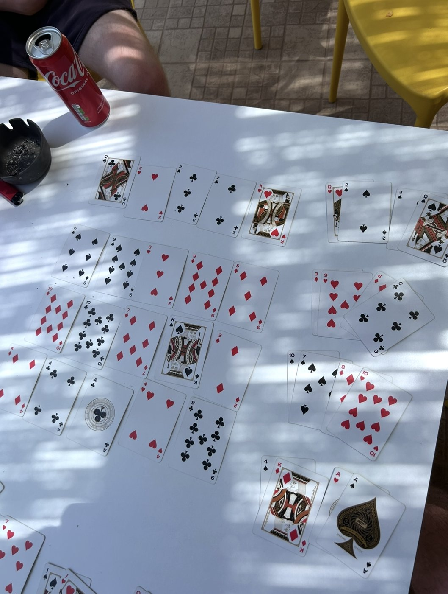
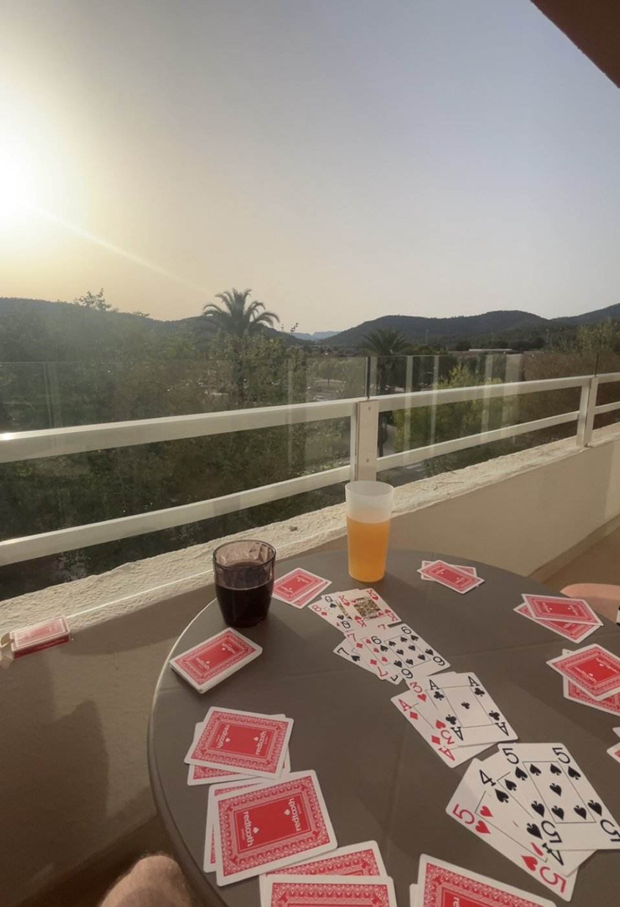
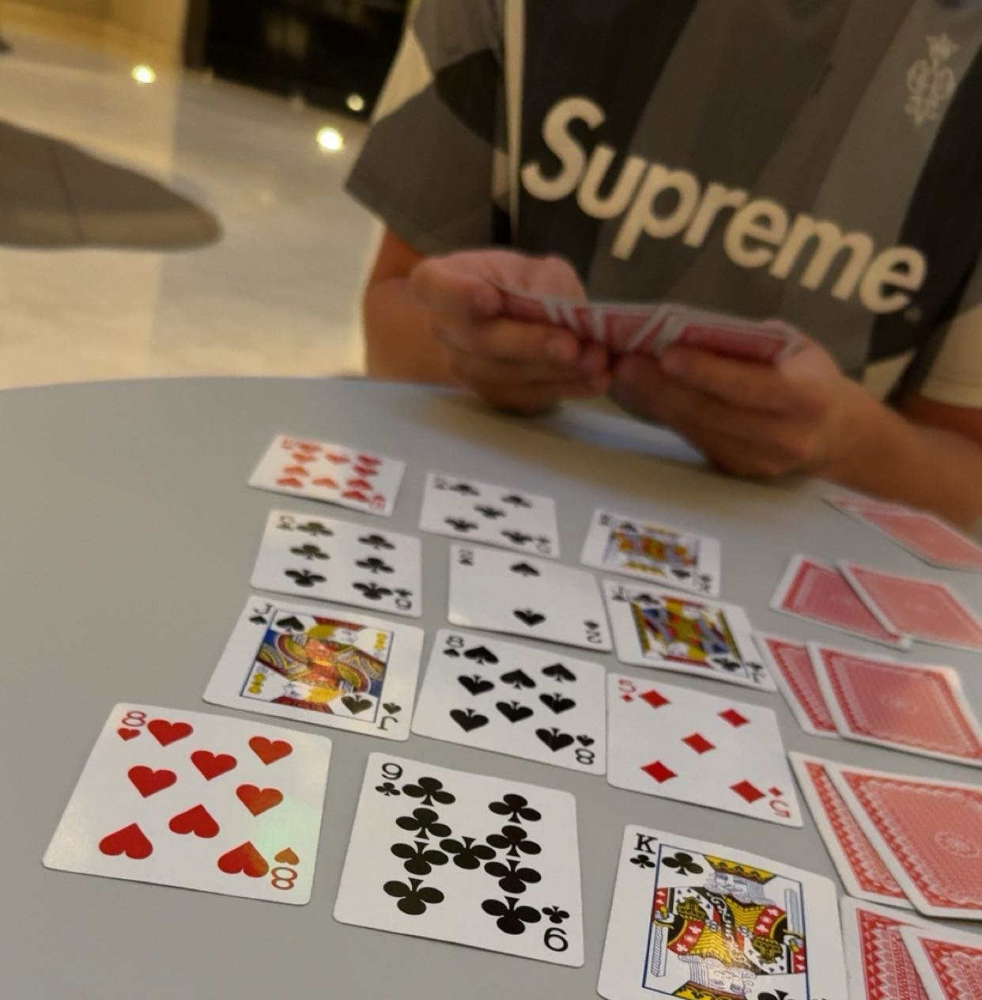
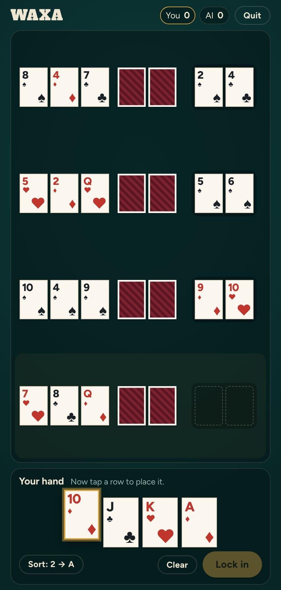
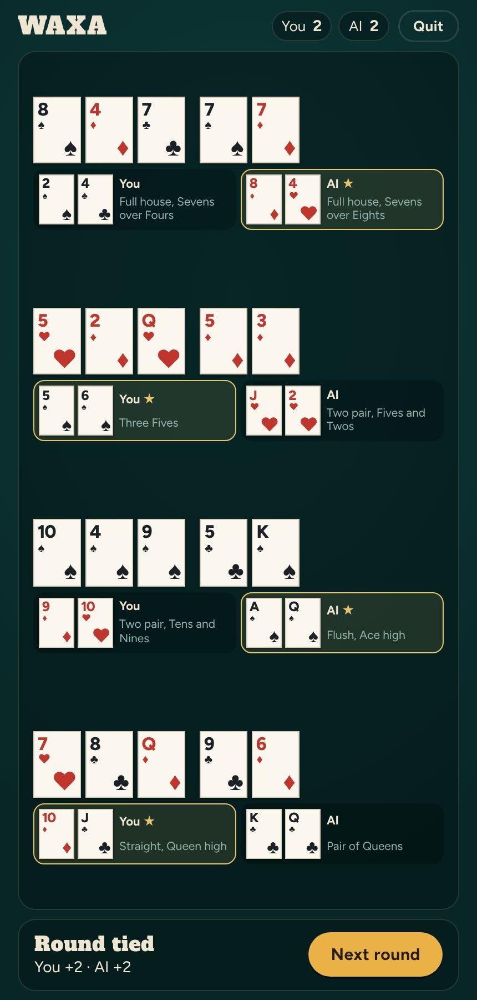

Log 002 · 30 Oct 2026
Waxa: Turning a Lockdown Card Game into an App
Where the idea came from
Waxa is a poker game my friend Luc made up over lockdown. Luc had always been in the poker scene, and he introduced me to it when we worked together at Grosvenor Casino. Since 2021 I've played it on every holiday I've been on, teaching it to friends, family and strangers I've met along the way. If you understand poker, or card games in general, it's really easy to pick up. When I left Newcastle, I told Luc I'd turn it into an app so we could still play.



How it works
- 2 or 3 players, one 52-card deck.
- Four boards are dealt. You can see the four flops, but the turns and rivers stay face down.
- Everyone gets 10 cards and puts 2 on each board. The 2 you don't use are discarded.
- Boards are revealed one at a time, and the best poker hand on each board wins a point.
- Win all four on your own and you scoop: 5 points instead of 4.
How it was built
I built it with Claude. I made Pass'n'Play first, so I could test the mechanics by passing one phone around the table. A cover screen hides each player's cards while the device changes hands. Once the game worked, I added an AI opponent. For every pair of cards in its hand, it plays out a few hundred random turns, rivers and opponent hands on each board. Then it picks the four pairs that win it the most points.
What I struggled with
The hardest part was the interface. Four boards, ten cards and two players' hands is a lot to fit on one screen, and I wanted it to be comfortable and easy to understand. You can drag a card onto a board or tap a card and then a board, sort your hand by rank or suit, and send a card back by tapping it.


What's next
Online rooms with a code, so Luc and I can play from different places. First I need somewhere to host it, either on the App Store or as a website.